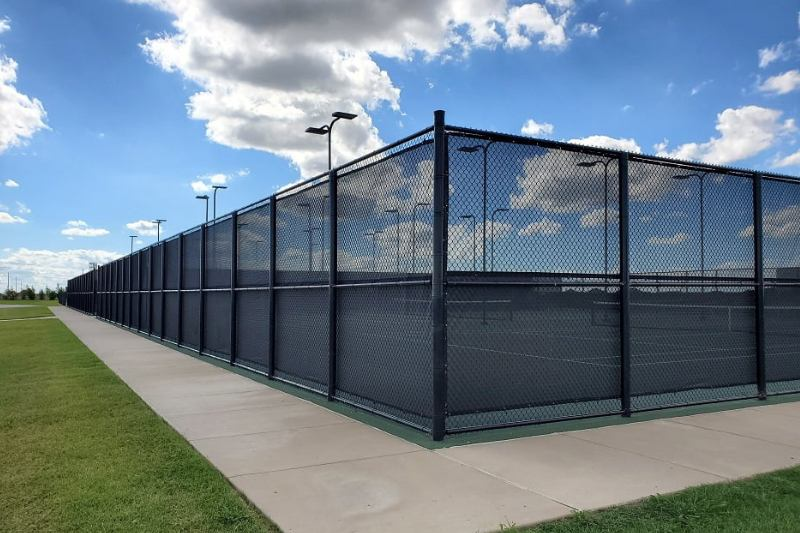

Height and gauge
Taller, heavier mesh costs more and needs a stronger frame.
Chain link is the practical fence. It marks a yard, holds a dog, and secures a lot without the price of a privacy wall. Residential fabric and commercial fabric are not the same product, and we quote them that way.

Use it for a backyard that needs containment more than a solid screen, for a side yard, or for a dog run that has to survive digging and leaning. Black or green coated fabric is the usual look on a house. Bare galvanized is fine when appearance is not the point.
A storage yard, a contractor lot, or a taller line with heavier gauge belongs on the commercial fencing page. Adding a full privacy screen to a light residential frame turns the fence into a sail. We will not hang that screen on posts that cannot hold the wind.
House yard, dog run, or a heavier site. That choice sets the fabric and the posts.
Ends, corners, and gate posts go in first. They carry the tension.
The mesh is pulled tight and tied. Loose fabric is what sags next season.
Walk and drive gates are framed so they latch without dragging.
We do not publish a price list. These are the details that move an estimate.
Taller, heavier mesh costs more and needs a stronger frame.
Galvanized is the plain version. Vinyl-coated fabric costs more and looks finished against a house.
A wide drive gate is a different price from a three-foot walk gate.
Privacy slats add material and wind load. Rock and caliche add digging time.
It is usually the lower-cost way to enclose a yard, but the quote still depends on height, coating, gates, and the dig. A four-foot galvanized dog run and a six-foot black commercial line are not the same number. We measure the line before we price it.
Yes, when the frame can take the extra wind. Slats or a screen turn an open fence into a partial sail. On an exposed lot we size the posts for that, or we tell you a wood or vinyl privacy fence is the honest product.
Yes. Black and green coated fabric are the residential options we install most. Galvanized is available when the job is a work yard and the coating is not worth the money. Commercial specs are quoted separately.
Usually no. A house lot does fine with residential fabric and the right posts. Heavier gauge, taller frames, and barbed top arms are for sites that need them. Putting a commercial spec on a patio is wasted money, and putting a light residential frame on a storage yard is the opposite mistake.
Yes, when the rest of the line is worth keeping. We reset posts, restretch fabric, and rehang gates. If the terminals have failed along the whole run, a repair quote and a replacement quote are both part of the conversation.
Send the approximate length, the city, and whether this is a new line or a repair. We will tell you if a different material fits the lot better.